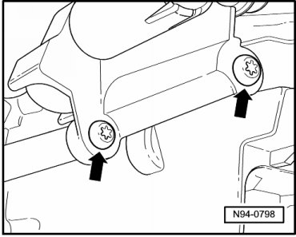
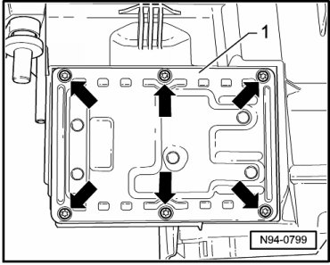
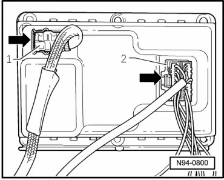

Headlamp Range Control Module
HID Headlamps, through 11.06
Headlamp Range Control Module
• Illustrations depict replacement of Headlamp range control module at left headlamp.
• Replacement of Left Headlamp Range Control Module (J567) and of Right Headlamp Range Control Module (J568) is performed analogously.
• For the Touareg, the control of the automatic or dynamic vertical headlamp aim control system occurs via two control modules.
• Control of left headlamp is performed by Left Headlamp Range Control Module (J567). Left Headlamp Range Control Module (J567) is located directly beneath left headlamp.
• Control of right headlamp is performed by Right Headlamp Range Control Module (J568). Right Headlamp Range Control Module (J568) is located directly beneath right headlamp.
Removing
- Switch off ignition, switch off all electrical consumers and remove ignition key.
- Remove headlamp --> [ Headlamps, through 11.06 ] Headlamps, through 11.06.
- Remove mounting bolts - arrows - of adjusting shaft for lateral adjustment.

- Remove adjusting shaft for lateral adjustment.
- Remove mounting bolts - arrows - of headlamp range control module - 1 -.

- Remove headlamp range control module - 1 - out of housing cut-out.
- Unclip connector retaining bracket for gas-discharge lamp - 1 - in - direction of arrow - and disconnect connector.

- Press catch of connector for headlamp range control module - 2 - in - direction of arrow - and disconnect connector.
Installing
Install in reverse order of removal, noting the following:
• Make sure seal has proper seating when installing headlamp range control module. It is destroyed by ingress of water into headlamp.
• After installing a new control module, it must be coded:
Coding Left Headlamp Range Control Module (J567) --> [ Left HID Headlamp Range Control Module, through 11.06, Coding ] HID Headlamps, through 11.06.
Coding Right Headlamp Range Control Module (J568) --> [ Right HID Headlamp Range Control Module, through 11.06, Coding ] HID Headlamps, through 11.06.
- Check headlamp for function.
- Check and adjust headlamp aim if necessary.